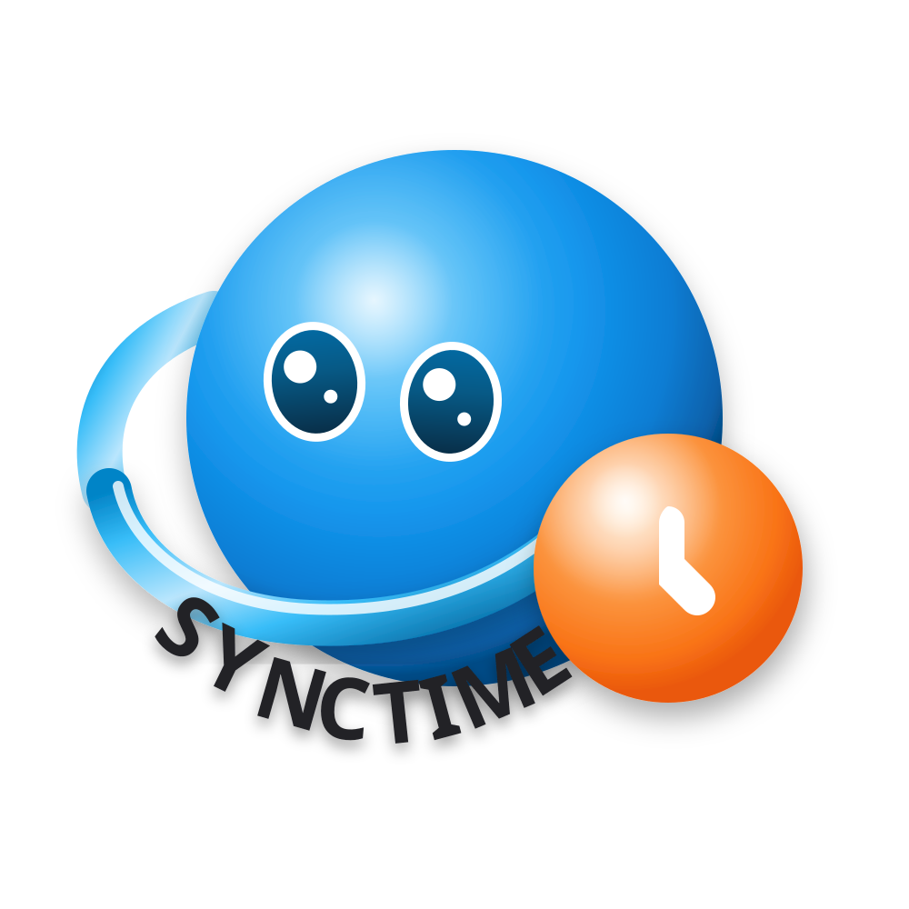

旅吧
熱門推薦好友
第一次去京都，有推薦的秋季散步路線嗎？
#京都 #秋天 #慢旅行剛從葡萄牙回來，里斯本真的很適合慢旅行。
#葡萄牙 #旅行分享⌂ ◎ ＋ ◌ ◉

SyncTime 共時 查看專案 ↗TRAVEL BETTER, TOGETHER
SyncTime 共時，讓你探索旅程、找到合適旅伴、一起討論與完成旅行。
第一次去京都，有推薦的秋季散步路線嗎？
#京都 #秋天 #慢旅行剛從葡萄牙回來，里斯本真的很適合慢旅行。
#葡萄牙 #旅行分享ALL IN ONE PLACE
依目的地、日期、預算與偏好探索旅程，快速找到真正適合同行的人。
把行程、地點與決策集中在同一個地方，不再讓資訊散落在不同群組。
分享旅行靈感、即時情報與心得，從其他旅人身上發現下一段旅程。
遇到功能或規劃問題時，隨時取得清楚、即時的協助。
PLAN TOGETHER
建立旅程、設定地點與日期，再讓真正有興趣的旅伴加入。旅行規劃不必從零開始。
東京賞楓季有人也是一個人出發嗎？
#東京 #賞楓 #找旅伴分享一間在巴塞隆納意外找到的小店。
#西班牙 #美食TRAVEL BAR
在旅吧分享即時情報、旅行心得與問題；透過熱門、推薦與好友動態，遇見更多同頻的人。
集中記錄旅途費用與智慧結算，少一點算帳，多一點旅行。
餐廳、行程、分工都能快速決定，讓群組討論真的有結果。
把 Google Maps 地點帶進聊天室，集合與導航更直接。
探索世界，找尋最合適的旅伴。
查看 SyncTime 專案 →